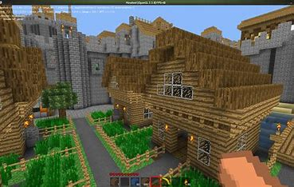

Sobre o Minetest
O Minetest é um jogo de construção sandbox gratuito e de código aberto, inspirado por jogos como Minecraft. Ele permite explorar, construir e modificar mundos virtuais de forma personalizada.
Disponível para Windows, Linux, macOS e Android, o Minetest oferece uma experiência acessível para todos os tipos de jogadores, seja para diversão casual ou para desenvolvedores que desejam criar mods e contribuir com a comunidade.
Características Principais
- Mundos Infinitos: Explore ambientes gerados proceduralmente com biomas variados.
- Suporte a Mods: Adicione funcionalidades com mods criados pela comunidade.
- Modo Multiplayer: Jogue com amigos em servidores personalizados ou crie seu próprio mundo.
- Gratuito e Aberto: Código aberto que promove inovação e colaboração.
- Compatibilidade: Disponível em várias plataformas, incluindo dispositivos móveis.
Galeria
Exemplo de construção criativa feita no Minetest.